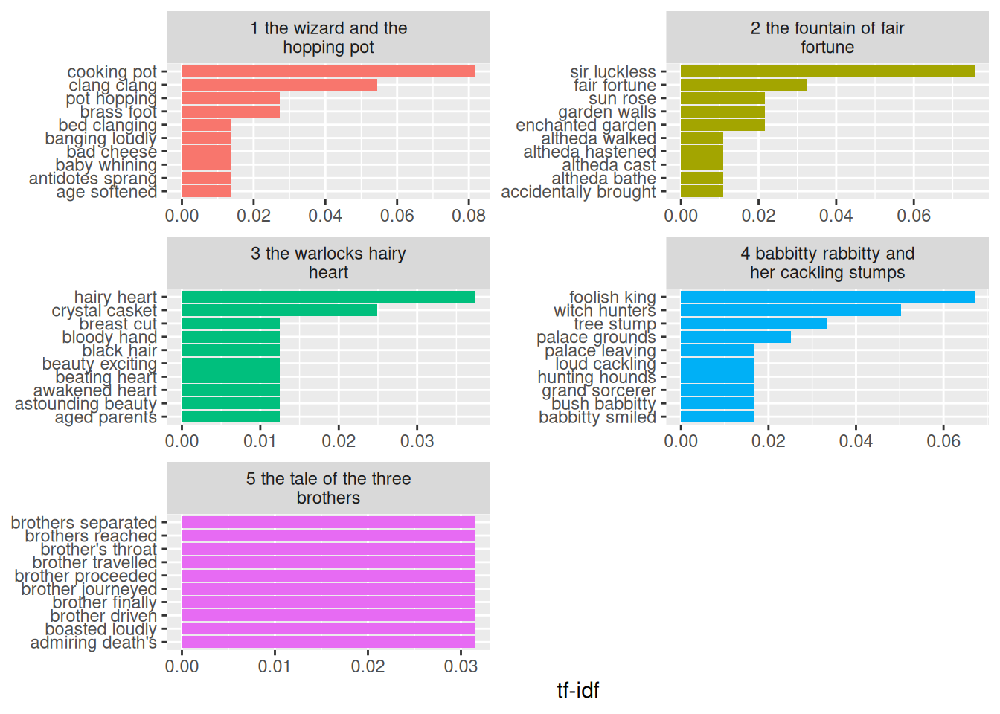
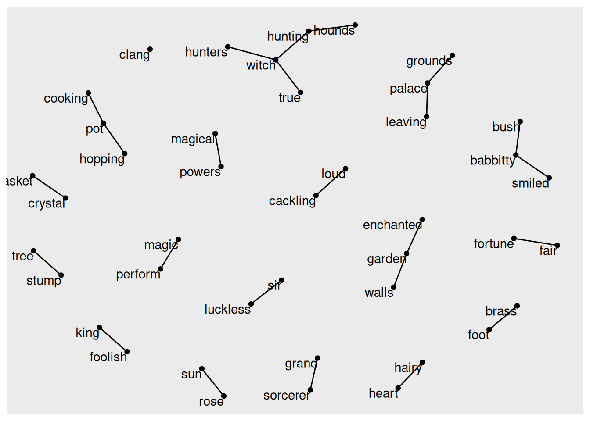
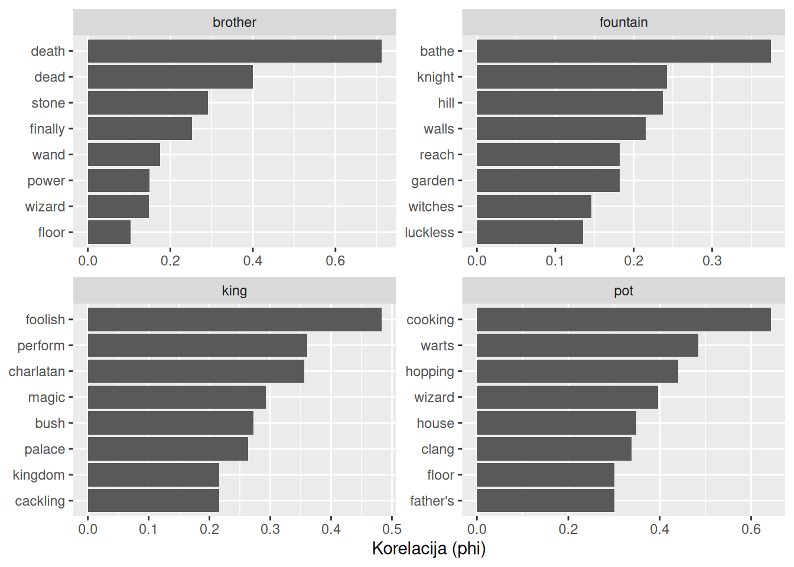

Riječi u tekstu ne stoje same, nego se njihovo značenje oblikuju riječi koje im prethode i koje ih slijede, kao i riječi s kojima se pojavljuju u istoj rečenici ili odlomku. Brojanjem pojedinačnih riječi ti se odnosi gube pa iz analize ispada upravo ono što tekst čini tekstom, a ne popisom riječi. Promatranjem parova uzastopnih riječi i riječi koje se pojavljuju zajedno moguće je otkriti ustaljene izraze, povezane pojmove i skupine riječi koje zajedno grade teme teksta, a mrežni prikazi omogućuju da se ti odnosi vide svi odjednom.
U dosadašnjim smo analizama riječi promatrali kao zasebne jedinice. Mnoge se analize teksta, međutim, temelje na odnosima među riječima, odnosno na analizi riječi obično slijede neke druge riječi i koje se riječi pojavljuju zajedno u istom dijelu teksta. U ovom ćemo poglavlju takve odnose izračunati i prikazati. Za to ćemo, uz pakete koje već poznajemo, koristiti još tri paketa:
igraph za stvaranje i obradu mreža,
ggraph koji proširuje paket ggplot2 za crtanje mrežnih prikaza,
widyr koji računa broj zajedničkih pojavljivanja i korelacije parova riječi u urednom obliku podataka.
Kao što smo vidjeli u poglavlju o pretpostavkama za analizu teksta, funkcija unnest_tokens() može tekst podijeliti i na nizove uzastopnih riječi, n-grame. Tako možemo promatrati koliko često neka riječ slijedi drugu. Tekst podijeljen na bigrame, odnosno parove uzastopnih riječi, već smo spremili u podatkovni okvir tToBtB_bigram.
# Pregled bigramatToBtB_bigram
# A tibble: 5,775 × 4
line fairy_tale paragraph_no bigram
<int> <chr> <int> <chr>
1 20 1_the_wizard_and_the_hopping_pot 1 there was
2 20 1_the_wizard_and_the_hopping_pot 1 was once
3 20 1_the_wizard_and_the_hopping_pot 1 once a
4 20 1_the_wizard_and_the_hopping_pot 1 a kindly
5 20 1_the_wizard_and_the_hopping_pot 1 kindly old
6 20 1_the_wizard_and_the_hopping_pot 1 old wizard
7 20 1_the_wizard_and_the_hopping_pot 1 wizard who
8 20 1_the_wizard_and_the_hopping_pot 1 who used
9 20 1_the_wizard_and_the_hopping_pot 1 used his
10 20 1_the_wizard_and_the_hopping_pot 1 his magic
# ℹ 5,765 more rows
Za daljnju je analizu korisno stupac bigram podijeliti na dva stupca, word1 i word2, po jedan za svaku riječ bigrama. To radimo funkcijom separate() iz paketa tidyr, kojoj zadajemo stupac koji dijelimo, nazive novih stupaca i znak na kojem se dijeli (sep = " ", razmak). Tako možemo, primjerice, ukloniti bigrame u kojima je bilo koja od riječi zaustavna riječ.
Za daljnju je analizu korisno stupac bigram podijeliti na dva stupca, word1 i word2, po jedan za svaku riječ bigrama. To radimo funkcijom separate() iz paketa tidyr kojoj zadajemo stupac koji dijelimo, nazive novih stupaca i znak na kojem se dijeli (sep = " ", razmak). Tako možemo, primjerice, ukloniti bigrame u kojima je bilo koja od riječi zaustavna riječ.
# Podjela bigrama na dvije riječitToBtB_bigram_separated <- tToBtB_bigram |>separate(bigram, c("word1", "word2"), sep =" ")# Pregled podijeljenih bigramatToBtB_bigram_separated
# A tibble: 5,775 × 5
line fairy_tale paragraph_no word1 word2
<int> <chr> <int> <chr> <chr>
1 20 1_the_wizard_and_the_hopping_pot 1 there was
2 20 1_the_wizard_and_the_hopping_pot 1 was once
3 20 1_the_wizard_and_the_hopping_pot 1 once a
4 20 1_the_wizard_and_the_hopping_pot 1 a kindly
5 20 1_the_wizard_and_the_hopping_pot 1 kindly old
6 20 1_the_wizard_and_the_hopping_pot 1 old wizard
7 20 1_the_wizard_and_the_hopping_pot 1 wizard who
8 20 1_the_wizard_and_the_hopping_pot 1 who used
9 20 1_the_wizard_and_the_hopping_pot 1 used his
10 20 1_the_wizard_and_the_hopping_pot 1 his magic
# ℹ 5,765 more rows
10.0.1 Brojanje n-grama
Analiza bigrama slična je analizi pojedinačnih riječi. Najjednostavnija je analiza brojanje najčešćih bigrama funkcijom count().
# A tibble: 4,368 × 2
bigram n
<chr> <int>
1 of the 40
2 to the 30
3 the charlatan 26
4 in the 25
5 and the 20
6 the king 20
7 the fountain 16
8 at the 15
9 of his 14
10 upon the 14
# ℹ 4,358 more rows
U bajkama se pojavljuje 4368 različitih bigrama. Najčešći su of the (40 pojavljivanja), to the (30), the charlatan (26) i in the (25). Sedam od deset najčešćih bigrama, poput of the, to the, and the ili upon the, sastoji se isključivo od zaustavnih riječi pa o sadržaju bajki ne govori ništa. Preostala tri, the charlatan, the king i the fountain, spajaju član the s riječima koje smo već upoznali kao karakteristične za pojedine bajke, ali i u njima je zaustavna riječ zapravo višak, a sadržaj nosi samo druga riječ. Zato iz podijeljenih bigrama uklanjamo one u kojima je bilo word1 bilo word2 zaustavna riječ, a zatim brojimo preostale.
# A tibble: 588 × 3
word1 word2 n
<chr> <chr> <int>
1 foolish king 8
2 sir luckless 7
3 cooking pot 6
4 witch hunters 6
5 clang clang 4
6 tree stump 4
7 fair fortune 3
8 hairy heart 3
9 palace grounds 3
10 babbitty smiled 2
# ℹ 578 more rows
Nakon uklanjanja zaustavnih riječi ostalo je 588 različitih bigrama, otprilike sedam puta manje nego prije. Sada su najčešći bigrami foolish king (8 pojavljivanja), sir luckless (7), cooking pot i witch hunters (po 6) te clang clang i tree stump (po 4). Riječ je uglavnom o likovima i predmetima uz pridjeve ili odrednice koje ih stalno prate: kralj je u pravilu foolish, vitez se pojavljuje s titulom sir, a lonac je cooking pot. Bigram clang clang pokazuje ponavljanje iste riječi kojim se u bajci oponaša zvuk lonca. Većina bigrama, međutim, pojavljuje se samo jednom ili dvaput. Već od desetog mjesta nijedan se bigram ne pojavljuje više od dva puta, a što pokazuje koliko su parovi riječi rjeđi od pojedinačnih riječi.
Podijeljeni bigrami omogućuju i ciljanija pitanja. Primjerice, u tekstu na engleskom jeziku iza naziva ulice obično dolazi riječ street, pa filtriranjem bigrama u kojima je druga riječ street dobivamo popis svih ulica. Na isti način možemo vidjeti koje riječi u bajkama dolaze ispred riječi king, odnosno kako se kralj opisuje.
# A tibble: 5 × 3
word1 word2 n
<chr> <chr> <int>
1 foolish king 8
2 jubilant king 1
3 magical king 1
4 petrified king 1
5 shamed king 1
Kralj se u bajkama opisuje pet različitih riječi, no gotovo uvijek istom: foolish se pojavljuje osam puta, dok se jubilant, magical, petrified i shamed pojavljuju po jednom. Već i ovaj kratak popis pokazuje kakav je lik kralj, ponajprije budalast, a pridjevi poput jubilant, petrified i shamed daju naslutiti da se njegovo raspoloženje tijekom priča mijenja, od ushićenja preko straha do posramljenosti.
Za neke je analize bigrame nakon filtriranja korisno ponovno spojiti u jedan stupac. To radimo funkcijom unite() koja je suprotna funkciji separate() i spaja zadane stupce u jedan, s navedenim znakom između njih.
# Ponovno spajanje riječi u bigrametToBtB_bigram_united <- tToBtB_bigram_separated_stop_words |>unite(bigram, word1, word2, sep =" ")# PregledtToBtB_bigram_united
Na isti se način mogu analizirati i trigrami. Ovdje tekst tokeniziramo na trigrame, uklanjamo retke iz kojih se trigram nije mogao stvoriti, dijelimo trigrame na tri riječi, uklanjamo trigrame sa zaustavnim riječima, brojimo ih i na kraju ponovno spajamo.
# A tibble: 146 × 2
trigram n
<chr> <int>
1 clang clang clang 2
2 witch hunting hounds 2
3 admiring death's gifts 1
4 age softened mind 1
5 aged parents died 1
6 altheda cast rocks 1
7 altheda walked faster 1
8 antidotes sprang ready 1
9 appointed day hundreds 1
10 appointed grand sorcerer 1
# ℹ 136 more rows
10.1 tf-idf analiza n-grama
Bigram se može tretirati kao pojam na isti način kao pojedinačna riječ. Tako možemo izračunati tf-idf bigrama i pronaći bigrame najkarakterističnije za pojedinu bajku.
Na vrhu tablice nalaze se bigrami koje smo već vidjeli među najčešćima: cooking pot u bajci The Wizard and the Hopping Pot, sir luckless u bajci The Fountain of Fair Fortune i foolish king u bajci Babbitty Rabbitty and Her Cackling Stumps. Svi bigrami u prvih deset redaka imaju isti idf, 1,61, što znači da se svaki pojavljuje u samo jednoj bajci. To nije slučajno jer tablica ima 589 redaka, a različitih bigrama ima 588 pa se samo jedan bigram pojavljuje u više od jedne bajke. Za razliku od pojedinačnih riječi, parovi riječi gotovo su uvijek svojstveni samo jednoj bajci pa poredak prema tf-idf ovdje ovisi gotovo isključivo o tome koliko se bigram puta pojavljuje (tf).
# Bigrami s najvećim tf-idf vrijednostima po bajkamatToBtB_bigram_tf_idf |>group_by(fairy_tale) |>slice_max(tf_idf, n =10, with_ties =FALSE) |>ungroup() |>mutate(fairy_tale =str_replace_all(fairy_tale, "_", " ")) |>ggplot(aes(x = tf_idf, y =reorder_within(bigram, tf_idf, fairy_tale), fill = fairy_tale)) +geom_col(show.legend =FALSE) +facet_wrap(~fairy_tale, ncol =2, scales ="free", labeller =label_wrap_gen(width =25)) +scale_y_reordered() +labs(x ="tf-idf", y =NULL)

Graf pokazuje bigrame najkarakterističnije za svaku bajku. U četiri bajke na vrhu se nalaze bigrami koji opisuju središnje likove i predmete: lonac (cooking pot, clang clang, pot hopping), vitez (sir luckless), čarobnjakovo srce (hairy heart) i kralj (foolish king), uz koje se u bajci Babbitty Rabbitty pojavljuju i lovci na vještice (witch hunters) i panj (tree stump). Bajka The Tale of the Three Brothers znatno se razlikuje kod koje svi njezini bigrami imaju jednaku tf-idf vrijednost jer se svaki pojavljuje samo jednom. Takvih je bigrama više od deset, a funkcija slice_max() s argumentom with_ties = FALSE među njima bira prvih deset prema redoslijedu u tablici pa poredak na tom grafu nema značenja.
To dobro pokazuje glavno ograničenje analize bigrama. Parovi riječi mogu otkriti strukturu koja se ne vidi kad se broje samo pojedinačne riječi i daju kontekst koji pojedine riječi čini razumljivijima. No bigrami su mnogo rjeđi od pojedinačnih riječi jer se svaki par riječi pojavljuje rjeđe od bilo koje od riječi koje ga čine. U kratkim tekstovima, poput bajki, većina se bigrama pojavljuje samo jednom, pa analiza bigrama više dolazi do izražaja na većim zbirkama tekstova.
10.2 Mreža n-grama
Ponekad je korisno prikazati sve odnose među riječima odjednom, a ne samo nekoliko najčešćih. Jedan od takvih prikaza je mreža riječi. Mreža se sastoji od čvorova (engl. nodes), u ovom slučaju riječi, i bridova (engl. edges) koji povezuju čvorove, u ovom slučaju riječi koje se pojavljuju kao bigram. Za stvaranje mreže potreban je podatkovni okvir s tri vrste stupaca:
from - čvor iz kojeg brid polazi (prva riječ bigrama),
to - čvor u koji brid ulazi (druga riječ bigrama),
dodatni stupci s atributima bridova (npr. težina brida - ovdje broj pojavljivanja bigrama).
Upravo takav oblik ima podatkovni okvir tToBtB_bigram_count, sa stupcima word1, word2 i n. Funkcija graph_from_data_frame() iz paketa igraph od njega stvara mrežu u kojoj prva dva stupca tumači kao početni i završni čvor, a ostale kao atribute bridova. Kako mreža ne bi bila prenapučena, zadržavamo samo bigrame koji se pojavljuju više od jednom.
# Mreža bigrama koji se pojavljuju više od jednomtToBtB_bigram_graph <- tToBtB_bigram_count |>filter(n >1) |>graph_from_data_frame()# PregledtToBtB_bigram_graph
IGRAPH 7f1f23b DN-- 42 25 --
+ attr: name (v/c), n (e/n)
+ edges from 7f1f23b (vertex names):
[1] foolish ->king sir ->luckless cooking ->pot
[4] witch ->hunters clang ->clang tree ->stump
[7] fair ->fortune hairy ->heart palace ->grounds
[10] babbitty ->smiled brass ->foot bush ->babbitty
[13] crystal ->casket enchanted->garden garden ->walls
[16] grand ->sorcerer hunting ->hounds loud ->cackling
[19] magical ->powers palace ->leaving perform ->magic
[22] pot ->hopping sun ->rose true ->witch
+ ... omitted several edges
Paket igraph ima i vlastite funkcije za crtanje, no za crtanje mreža u stilu paketa ggplot2 pogodniji je paket ggraph. Mrežu crtamo funkcijom ggraph(), a zatim joj, kao u paketu ggplot2, dodajemo slojeve. Za osnovni prikaz potrebna su tri sloja: bridovi (geom_edge_link()), čvorovi (geom_node_point()) i natpisi čvorova (geom_node_text()). Argument layout = "fr" određuje algoritam (Fruchterman–Reingold) koji raspoređuje čvorove tako da povezani čvorovi budu blizu, a nepovezani daleko. Budući da algoritam uključuje slučajnost, funkcijom set.seed() osiguravamo da graf pri svakom pokretanju izgleda jednako.
# Osiguravanje ponovljivosti rasporeda čvorovaset.seed(2017)# Osnovni prikaz mreže bigramaggraph(tToBtB_bigram_graph, layout ="fr") +geom_edge_link() +geom_node_point() +geom_node_text(aes(label = name), vjust =1, hjust =1)

Prikaz se može doraditi:
argumentom edge_alpha = n prozirnost brida ovisi o tome koliko je bigram čest pa su češći bigrami tamniji;
funkcijom arrow() bridovima se dodaju strelice koje pokazuju smjer, odnosno koja riječ dolazi prva;
argumentom end_cap strelica završava malo prije čvora kako ga ne bi prekrila;
čvorovi se povećavaju i boje (color = "lightblue", size = 5);
funkcijom theme_void() uklanjaju se osi i pozadina koje u mrežnom prikazu nemaju značenje.
Mreža se sastoji od mnogo malih i međusobno nepovezanih dijelova. Većinom su to samo dvije riječi povezane jednom strelicom, poput fair → fortune, hairy → heart ili crystal → casket, a tek se poneke riječi povezuju u kraće nizove. To je posljedica kratkoće bajki, odnosno toga da smo u mrežu uključili samo bigrame koji se pojavljuju više od jednom, a takvih je u bajkama malo. U većim zbirkama tekstova ovakva mreža obično ima i veliku središnju skupinu međusobno povezanih riječi.
Ovakva je mreža prikaz Markovljeva lanca, modela u kojem izbor svake riječi ovisi samo o riječi koja joj prethodi. Generator teksta koji bi slijedio ovaj model mogao bi, primjerice, krenuti od riječi enchanted, nastaviti s garden, a zatim s walls, ili od riječi cooking preko pot do hopping, birajući svaki put jednu od riječi u koje vodi strelica. Prozirnost strelica pokazuje koliko su pojedini prijelazi česti, tamne strelice foolish → king, sir → luckless i witch → hunters, odgovaraju najčešćim bigramima, dok su strelice bigrama koji se pojavljuju samo dvaput svjetlije. Bigram clang clang u mreži se vidi samo kao usamljeni čvor clang jer je riječ povezana sama sa sobom, a takav se brid u ovom prikazu ne iscrtava.
10.3 Parovi riječi u istom odlomku
Tokenizacija na bigrame korisna je za proučavanje susjednih riječi. Međutim, mogu nas zanimati i riječi koje se pojavljuju zajedno u istom dijelu teksta, iako ne stoje jedna uz drugu. Uredni podaci prikladni su za usporedbe među stupcima ili grupiranje po retcima, ali je s njima teže uspoređivati retke međusobno, npr. izbrojati koliko se puta dvije riječi pojavljuju u istom odlomku. Paket widyr olakšava takve izračune tako da podatke privremeno pretvara u široki oblik, provodi izračun i rezultat vraća u uredan oblik.
Kao dio teksta u kojem tražimo zajednička pojavljivanja uzet ćemo odlomak. Svaki odlomak u podatkovnom okviru tToBtB_df ima jedinstven redni broj u stupcu line pa ga možemo koristiti kao oznaku odlomka. Tekst tokeniziramo na riječi i uklanjamo zaustavne riječi.
# Riječi po odlomcima, bez zaustavnih riječitToBtB_paragraph_words <- tToBtB_df |>unnest_tokens(word, text) |>filter(!word %in% stop_words$word)# PregledtToBtB_paragraph_words
Funkcija pairwise_count() iz paketa widyr broji u koliko se odlomaka svaki par riječi pojavljuje zajedno. Prvi joj je argument stupac s riječima, a drugi stupac koji označava odlomak.
# Broj odlomaka u kojima se parovi riječi pojavljuju zajednotToBtB_word_pairs <- tToBtB_paragraph_words |>pairwise_count(word, line, sort =TRUE)# PregledtToBtB_word_pairs
# A tibble: 35,136 × 3
item1 item2 n
<chr> <chr> <dbl>
1 charlatan king 11
2 king charlatan 11
3 pot wizard 8
4 king magic 8
5 wizard pot 8
6 brother death 8
7 king foolish 8
8 magic king 8
9 foolish king 8
10 babbitty charlatan 8
# ℹ 35,126 more rows
Ulazni podaci imali su jedan redak za svaki par odlomka i riječi, a rezultat ima jedan redak za svaki par riječi. I to je uredan oblik podataka, ali drugačije strukture. Tablica ima 35136 redaka, no svaki se par pojavljuje dvaput, jednom kao (X, Y) i jednom kao (Y, X), pa je različitih parova upola manje, 17568. To se vidi već na vrhu tablice jer se najčešći par, charlatan i king, nalazi se u prva dva retka, jednom u jednom, a jednom u drugom redoslijedu. Te se dvije riječi zajedno pojavljuju u 11 odlomaka. Slijede parovi koji se zajedno pojavljuju u po osam odlomaka: pot i wizard, king i magic, brother i death, king i foolish te babbitty i charlatan. Svaki od tih parova povezuje riječi iz iste bajke, pa nam ovakvo brojanje pokazuje koji se likovi i pojmovi u bajkama pojavljuju zajedno. Lako možemo pronaći i riječi koje se najčešće pojavljuju uz neku određenu riječ, primjerice uz riječ king.
# Riječi koje se najčešće pojavljuju u istom odlomku kao riječ "king"tToBtB_word_pairs |>filter(item1 =="king")
# A tibble: 245 × 3
item1 item2 n
<chr> <chr> <dbl>
1 king charlatan 11
2 king magic 8
3 king foolish 8
4 king babbitty 6
5 king palace 5
6 king perform 5
7 king power 4
8 king magical 4
9 king witch 4
10 king twig 4
# ℹ 235 more rows
Riječ king pojavljuje se u istim odlomcima s ukupno 245 različitih riječi. Najčešće se pojavljuje uz charlatan (11 odlomaka), magic i foolish (po 8) te babbitty (6). Slijede palace i perform (po 5) te power, magical, witch i twig (po 4). Popis tako okuplja glavne likove bajke Babbitty Rabbitty and Her Cackling Stumps, kralja, šarlatana i Babbitty, ali i skupinu riječi vezanih uz magiju (magic, magical, power, perform). To upućuje na to da se odlomci u kojima se kralj pojavljuje često bave magijom i njezinim izvođenjem. Pritom treba imati na umu da se na vrhu ovakvog popisa nalaze i riječi koje su same po sebi česte pa se pojavljuju uz mnoge druge riječi. Zato ćemo u sljedećem koraku izračunati korelaciju koja to uzima u obzir.
10.3.1 Korelacija parova riječi
Parovi riječi koji se najčešće pojavljuju zajedno nisu nužno i najpovezaniji jer to mogu biti jednostavno vrlo česte riječi. Zato je korisnije izračunati korelaciju među riječima koja pokazuje koliko se često pojavljuju zajedno u odnosu na to koliko se često pojavljuju odvojeno. Za to se koristi koeficijent phi (φ), uobičajena mjera povezanosti dviju binarnih varijabli. On pokazuje koliko je vjerojatnije da se u odlomku pojave obje riječi ili nijedna nego da se pojavi samo jedna od njih.
Koeficijent phi najlakše je objasniti tablicom:
Sadrži riječ Y
Ne sadrži riječ Y
Ukupno
Sadrži riječ X
n11
n10
n1·
Ne sadrži riječ X
n01
n00
n0·
Ukupno
n·1
n·0
n
U tablici n11 označava broj odlomaka u kojima se pojavljuju obje riječi, n00 broj odlomaka u kojima se ne pojavljuje nijedna, a n10 i n01 broj odlomaka u kojima se pojavljuje samo jedna od njih. Koeficijent phi tada je:
Kao i Pearsonov koeficijent korelacije, kreće se od -1 do 1. Vrijednost blizu 1 znači da se riječi gotovo uvijek pojavljuju zajedno, a vrijednost blizu nule da međusobno nisu povezane.
Koeficijent phi računa se funkcijom pairwise_cor() iz paketa widyr s istim argumentima kao pairwise_count(). Prije toga zadržavamo samo riječi koje se pojavljuju barem pet puta. Kod rijetkih riječi korelacija nije pouzdana pa bi dvije riječi koje se pojavljuju samo jednom, u istom odlomku, imale savršenu korelaciju 1, iako to može biti puka slučajnost.
# A tibble: 7,140 × 3
item1 item2 correlation
<chr> <chr> <dbl>
1 hunters brigade 1
2 brigade hunters 1
3 luckless sir 0.788
4 sir luckless 0.788
5 brother death 0.712
6 death brother 0.712
7 walls garden 0.662
8 garden walls 0.662
9 pot cooking 0.643
10 cooking pot 0.643
# ℹ 7,130 more rows
Tablica ima 7140 redaka, a i ovdje se svaki par pojavljuje dvaput, pa je različitih parova 3570. Toliko parova može se oblikovati od 85 riječi, koliko ih se u bajkama pojavljuje barem pet puta. Najveću korelaciju, 1, imaju riječi hunters i brigade, što znači da se pojavljuju uvijek u istim odlomcima, u svakom odlomku u kojem je jedna, nalazi se i druga. Visoke korelacije imaju i parovi sir i luckless (0,79), brother i death (0,71), walls i garden (0,66) te pot i cooking (0,64). Većinu tih parova već smo susreli među bigramima, kao sir luckless, garden walls i cooking pot, jer riječi koje stoje jedna uz drugu nužno se nalaze i u istom odlomku. Par brother i death, međutim, nije bigram, odnosno riječi se ne pojavljuju jedna uz drugu, ali se gotovo uvijek javljaju u istim odlomcima.
Usporedba s prethodnim ispisom pokazuje i razliku između broja zajedničkih pojavljivanja i korelacije. Par charlatan i king zajedno se pojavljuje u najviše odlomaka (11), ali ga nema među parovima s najvećom korelacijom. Obje riječi pojavljuju se i u mnogim odlomcima jedna bez druge, pa njihova povezanost, iako česta, nije toliko isključiva kao, primjerice, povezanost riječi sir i luckless.
Tako možemo odabrati nekoliko riječi koje nas zanimaju i pronaći riječi koje su s njima najpovezanije.
# Riječi najpovezanije s odabranim riječimatToBtB_word_cors |>filter(item1 %in%c("king", "brother", "pot", "fountain")) |>group_by(item1) |>slice_max(correlation, n =8, with_ties =FALSE) |>ungroup() |>ggplot(aes(x = correlation, y =reorder_within(item2, correlation, item1))) +geom_col() +facet_wrap(~item1, scales ="free") +scale_y_reordered() +labs(x ="Korelacija (phi)", y =NULL)

Graf za svaku od četiri odabrane riječi prikazuje osam riječi s kojima je najviše povezana, odnosno s kojima se najčešće pojavljuje u istim odlomcima u odnosu na to koliko se pojavljuju odvojeno. Svaka od četiri riječi okuplja oko sebe prepoznatljiv dio svoje bajke. Riječ brother najviše je povezana s riječima death (0,71) i dead, a zatim sa stone i wand, predmetima koje braća u bajci The Tale of the Three Brothers dobivaju od Smrti. Riječ fountain najviše je povezana s riječju bathe, a zatim s knight, hill, walls i garden, koje opisuju put do fontane i mjesto na kojem se nalazi. Riječ king najviše je povezana s riječju foolish, a zatim s perform, charlatan i magic, što odgovara kralju koji želi izvoditi magiju i kojeg pritom vara šarlatan. Riječ pot najviše je povezana s riječju cooking (0,64), a zatim s warts, hopping i clang, koje opisuju lonac koji je dobio bradavice, skakuće i zvecka.
Pri usporedbi grafova treba imati na umu da svaki ima vlastitu skalu na osi x (scales = "free"). Najveće korelacije za riječi brother i pot veće su od 0,6, a za riječ fountain manje od 0,4. Riječ fountain, dakle, nije ni s jednom riječi povezana tako snažno kao brother s riječju death, nego je slabije povezana s više riječi.
Paket ggraph možemo koristiti i za prikaz korelacija u obliku mreže. Kako mreža ne bi bila prenapučena, zadržavamo samo parove s korelacijom većom od 0,5. Za razliku od mreže bigrama, ovdje odnosi nemaju smjer jer je korelacija riječi X s riječi Y jednaka korelaciji riječi Y s riječi X pa bridovi nemaju strelice. Argument repel = TRUE razmiče natpise kako se ne bi preklapali.
Uz prag od 0,5 mreža je rijetka. Sastoji se od devet zasebnih dijelova, uglavnom parova riječi, a većinu smo već susreli među bigramima: sir i luckless, pot i cooking, walls i garden te palace i grounds. To nije neočekivano jer riječi koje stoje jedna uz drugu nužno se nalaze i u istom odlomku. Mreža, međutim, otkriva i veze koje bigrami ne pokazuju. Riječi death i brother povezane su iako ne čine bigram, a witches i knight povezuje bajka The Fountain of Fair Fortune u kojoj se vitez i vještice pojavljuju u istim prizorima. Nizovi babbitty - bush - inside i son - father’s - slipper povezuju po tri riječi iz istih dijelova bajki.
Jedina veća skupina čine riječi witch, hunters, brigade i hounds koje su gotovo sve međusobno povezane, a najtamniji brid, između riječi hunters i brigade, odgovara njihovoj savršenoj korelaciji (1). Ta skupina pokazuje ono što mreža korelacija može otkriti, a mreža bigrama ne može, da skupinu riječi koje zajedno opisuju jedan pojam ili prizor, ovdje lov na vještice, iako ne stoje uvijek jedna uz drugu. Za razliku od mreže bigrama, u ovoj su mreži povezane riječi koje se pojavljuju u istim odlomcima, a ne nužno jedna uz drugu pa odnosi nemaju smjer.